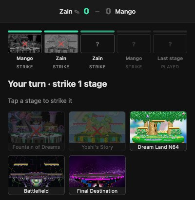
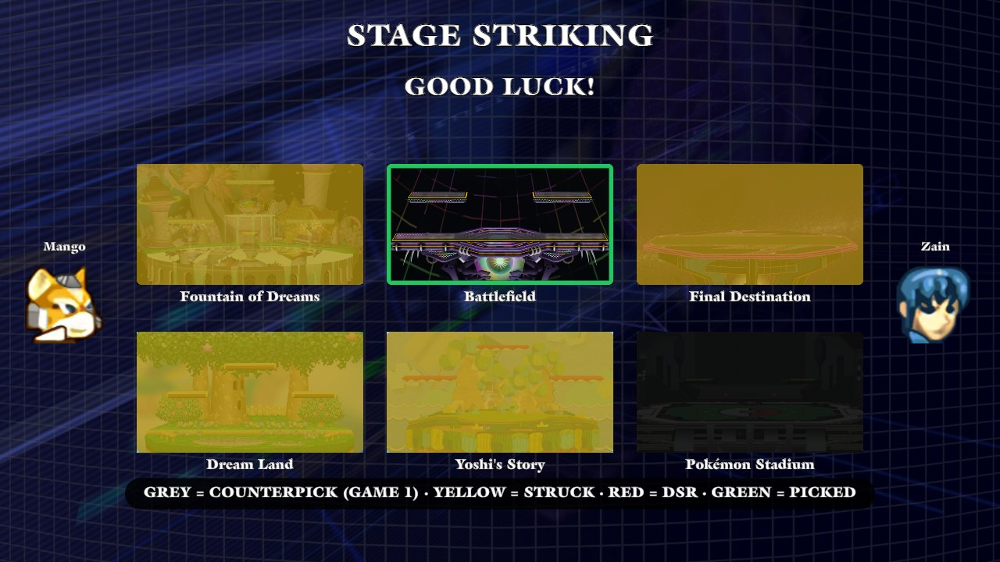

Stage striking on phones
Picks, strikes, bans and DSR — live on stream.
Players strike on their phones
Froggi runs your Melee sets by the tournament rules — at a venue or online. Each player (each team in doubles) opens a link on their phone and does everything there: characters (double blind in game 1), rock-paper-scissors, striking and banning stages, and counterpicks with DSR.
The phone shows whose turn it is and only lets a player act on their own turn, so the order always follows the rules — even with players in different cities.

Your stream follows along
Viewers see the striking live: which stages are left, which are struck, and whose turn it is. When the game starts your overlay switches to the game, and when it ends the result counts itself — Froggi reads it from Slippi.

With OBS connected, OBS switches scenes on its own too: your striking scene between games, the game scene during a game, a camera scene after — see Remote control OBS.
How to set it up
What you need
- Froggi on the PC that plays or spectates the games (Slippi Dolphin)
- A phone or any browser per player (per team in doubles)
- For online sets: ngrok or Tailscale (next page)
- Optional: OBS connected, and an overlay with a Stage Striking scene — the Stage Striking demo overlay is ready to use
Now let's set it up.
Player links
Each player (or team) gets their own link — it only lets that phone act as that player, and only on their turn. A new set makes new links.
- Tailscale (recommended) — a permanent public address: the links work at the venue and online, and never change. When Tailscale Funnel is on, the links use it.
- ngrok — a free temporary address for online sets when Tailscale isn't set up (changes when ngrok restarts; the Online toggle on the Dashboard).
- Neither — devices on the same Wi-Fi as your PC still work.
The QR codes on the Dashboard stay hidden until you click them, so your links don't end up on stream. Click a shown QR to copy the link for Discord, or put a tablet with the QR at the setup.
Start a set
- Open Stream → Tournament Dashboard. Pick Singles or Doubles (Auto follows the game being played).
- Click Start Set: the names (empty = the players' Slippi tags), Bo3 or Bo5, and whether players may agree to replay a stage DSR blocks.
- Players scan their QR code. They can type their own name on their phone (✎) — you can still change it on the Dashboard.
Froggi switches your overlay to the Stage Striking scene.
The rules on the phones
Game 1
- Characters — double blind: both pick at the same time without seeing each other.
- Rock · paper · scissors — 30 seconds, a random pick if time runs out, ties go again.
- The RPS winner chooses to strike first or second, then the starters are struck 1 – 2 – 1. The last stage is played.
Game 2 and later
- The winner bans a stage (no ban in Bo5).
- The loser picks the stage — not one they already won on (DSR), unless both agree on their phones.
- The winner picks a character, then the loser.
Doubles: each team's phone picks for both teammates and confirms them together. Doubles stages: Battlefield, Dream Land, Final Destination, Pokémon Stadium, Yoshi's Story.